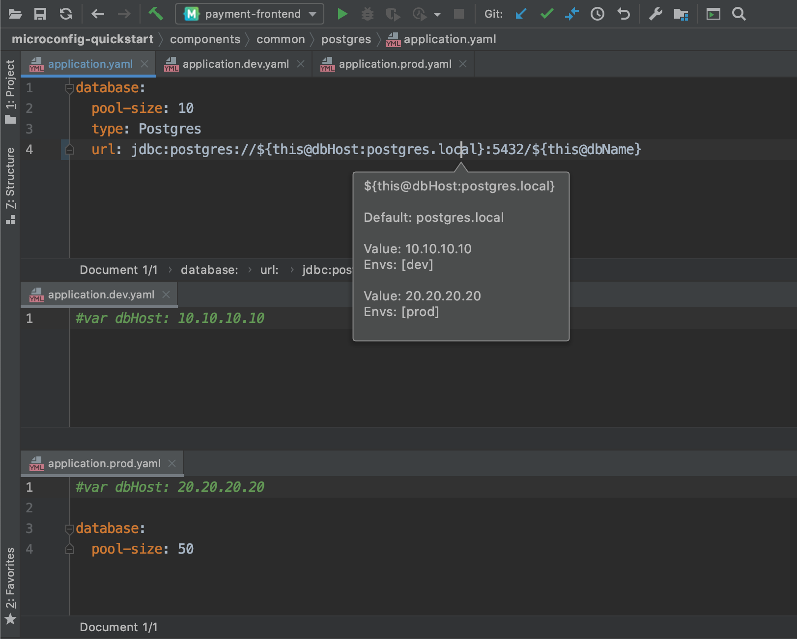
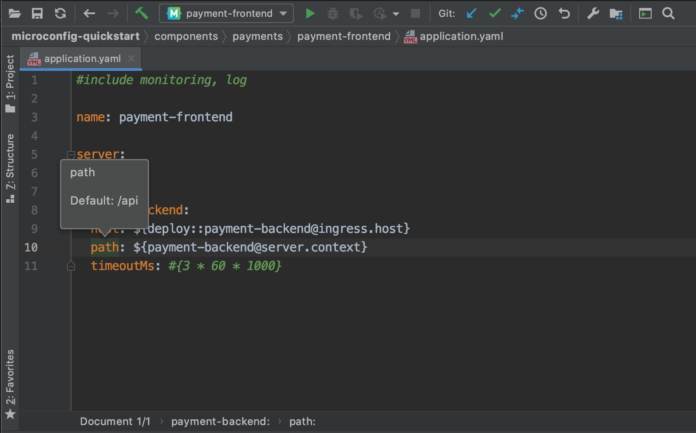
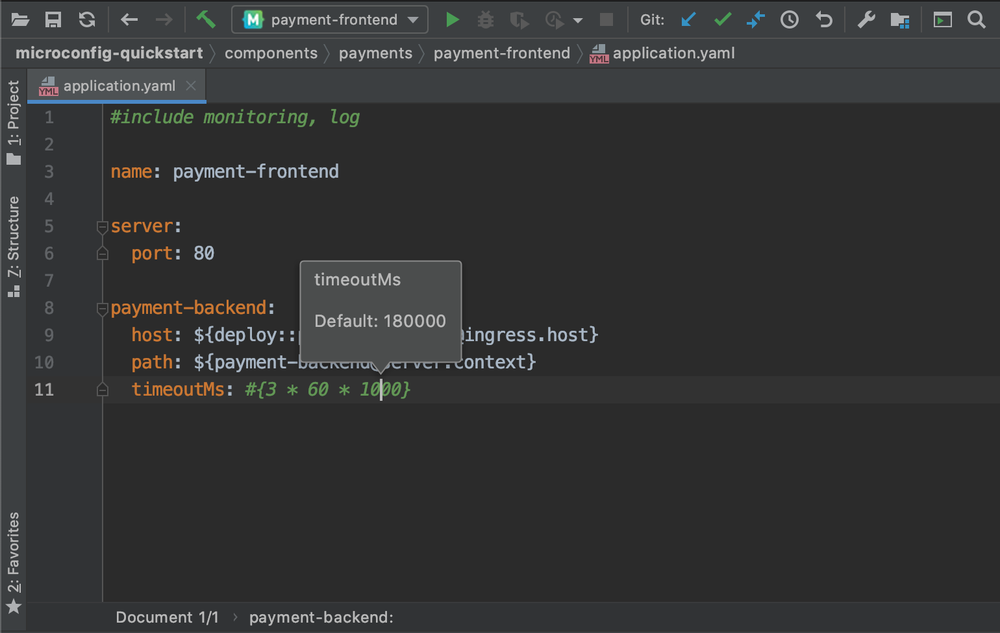
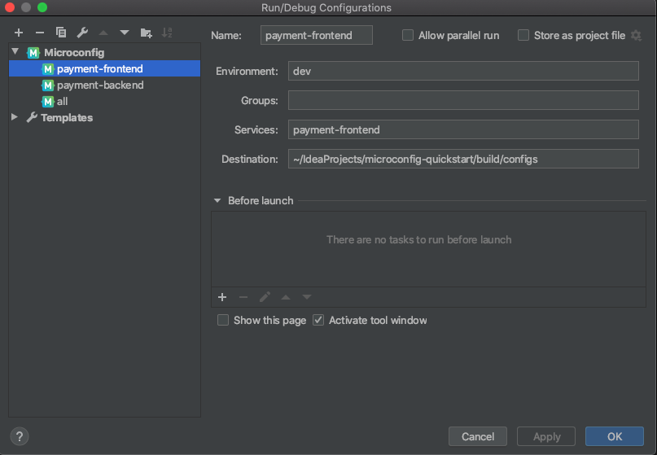

JetBrains IDE plugin

JetBrains IDE plugin for Microconfig allows navigation to #include and
${placeholder}
sources, preview individual placeholders or whole components and even build your configs.
Plugin is compatible with any JetBrains IDE: IntelliJ IDEA, PhpStorm, WebStorm, PyCharm, RubyMine, AppCode, CLion, GoLand, DataGrip, Rider, MPS, Android Studio
Overview
Plugin adds it's submenu in Main Menu -> Tools -> Microconfig and in editor's
RightClick popup.
Microconfig Plugin's main functions:
- Jump to component (F10)
- Resolve placeholder (Ctrl-F10 / Command-F10)
- Preview component (Shift-Ctrl-F10 / Shift-Command-F10)
- Build configuration (via Run Configuration)
Jump to component
Jump to component supports navigation from #include component line.
Once activated from the menu or by a hotkey it will try to find component in
'components' directory and open matching file inside.
Jump to placeholder
Also, it can jump to a component referenced in a placeholder like ${component@key}.
To choose a placeholder just place your cursor inside {}.
On Jump it will try to find component file and then a line with key
inside
it, once found it will place cursor on that line.
Resolve placeholder
Resolve placeholder shows value previews grouped by env names in a small hint.
If activated with cursor inside placeholder ${} it will try to resolve only selected
placeholder.

If activated with cursor on a property key it will try to resolve the whole property.

It also works with expression language.

Configuration preview
You can preview configuration for a component on the fly. To open preview either activate
Microconfig -> Preview component or use default hotkey (Shift-Ctrl-F10 /
Shift-Command-F10).
Preview window allows you to see resulting configs for different environments.
Config build
You can create standard IDEA Run configuration for Microconfig to build configs with your IDE.

Installation
Install plugin by name Microconfig.io from Idea Settings -> Plugins ->
Marketplace
Or download plugin zip file from
JetBrains
Plugin repository and import it via
Settings -> Plugins -> Install plugin
from disk...